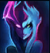
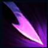
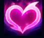
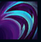
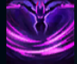

Evelynn
| Evelynn The Sad Mummy | |
|---|---|
| Release date | 01.05.2009 |
| Class | Assassin |
| Positions | Jungle |
| Resource | Mana |
| Range type | Melee |
| Adaptive type | Magic |
| Base statistics | |||
| Health | 572 – 2000 | Mana | 315 – 1029 |
| Health regen. | 8.5 – 21.25 |
Mana regen. | 8.11 – 18.31 |
| Armor | 37 – 96.5 | Attack damage | 61 – 112 |
| Magic resist. | 32 – 53.25 | Crit. damage | 175% |
| Move. speed | 335 | Attack range | 125 |
În colțurile întunecate ale Runeterrei, demonul Evelynn își caută următoarea victimă. Își ademenește prada sub înfățișarea seducătoare a unei femei, însă în clipa în care cineva îi cade în plasă, adevăratul său chip iese la iveală. Apoi își supune victima unor chinuri îngrozitoare, desfătându-se cu durerea ei. Pentru Evelynn, aceste crime nu sunt altceva decât niște aventuri nevinovate. Pentru restul locuitorilor Runeterrei, sunt povești terifiante despre dorințe sinistre și despre prețul plătit pentru înverșunarea de a le satisface. |  |
VĂL DEMONIC Când se află în afara luptei, Evelynn se acoperă cu ''Vălul demonic''. Acesta o vindecă atunci când are viață puțină și o camuflează după ce atinge nivelul 6. |
||
|---|---|---|---|---|
 |
SPINII URII Evelynn lovește din bici și îi provoacă daune primei unități atinse. Apoi, poate să își atace cu spini adversarii din apropiere de maximum 3 ori. |
|||
 |
FARMEC IREZISTIBIL Evelynn își blestemă ținta. După o perioadă de pregătire, următorul ei atac sau următoarea ei vrajă o va fermeca și îi va reduce rezistența la magie. |
|||
|  |
BICIUIRE Evelynn își biciuiește ținta și îi provoacă daune, apoi primește un scurt bonus la viteza de mișcare. |
|||
 |
VĂDUVIRE Evelynn devine imposibil de țintit pentru scurt timp și atacă sălbatic inamicii aflați în fața ei, apoi se teleportează pe o distanță mare în spate. |